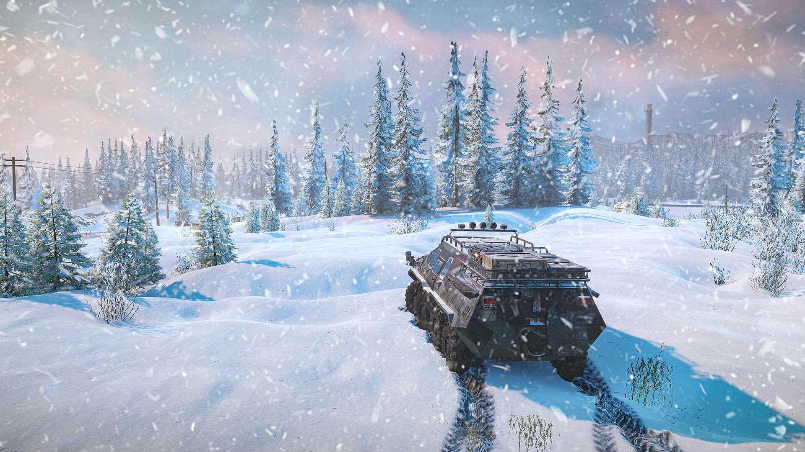
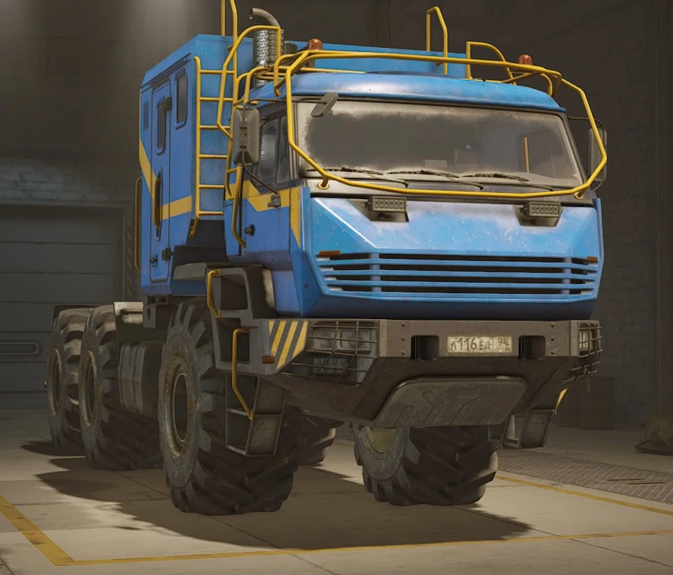
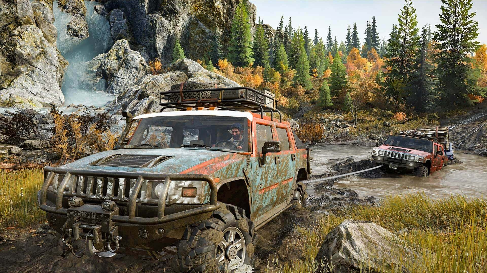
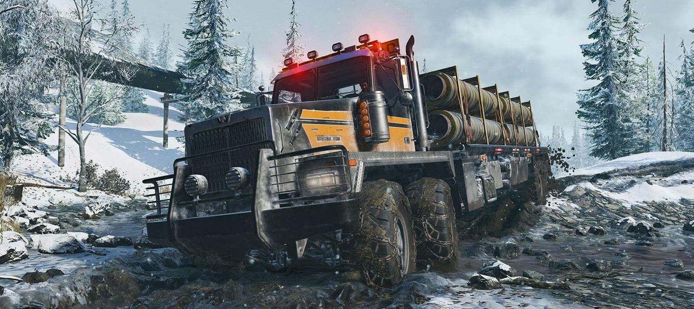
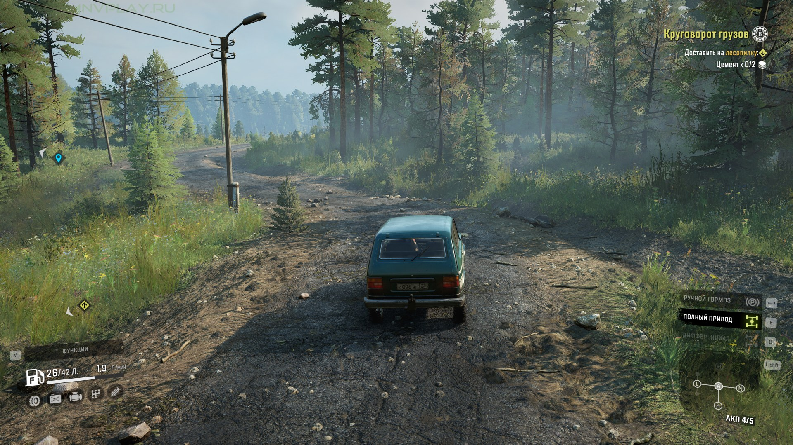
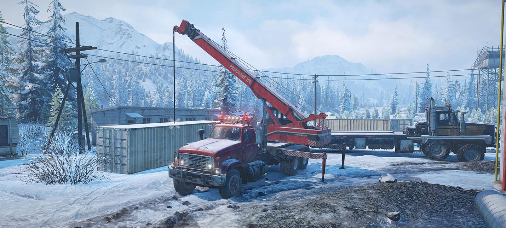
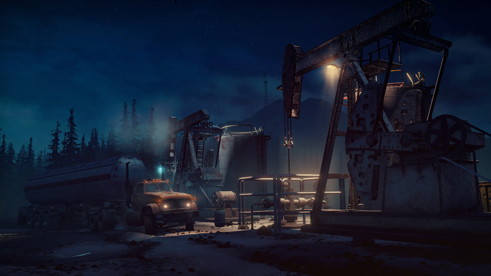

советы для новичков
Рынок грузовиков
В SnowRunner, как говорится, много денег не бывает, поэтому с самого начала игры стоит продавать абсолютно все, что вам не нужно. Прежде всего расставайтесь с грузовиками, которые не используются. Во время продажи они будут уходить с молотка за полную стоимость независимо от состояния.
Помимо грузовиков, продавайте и ненужные к ним запчасти. Кроме заработка денег на такой торговле, вы еще и сможете освободить место в гараже. Продажу транспортных средств в SnowRunner можно легко превратить в занятие для получения регулярной прибыли. Вы можете искать брошенные грузовики на карте и забирать самые лучшие модели себе, а те, что не подходят, просто продавать.
Лебедка – лучший друг
Вы можете использовать лебедку на любом транспортном средстве. Чтобы ее закрепить на местности, достаточно воспользоваться специальным меню. Также есть возможность закинуть лебедку на ближайшую к грузовику точку нажатием одной кнопки.
После того как лебедка установлена, вы можете либо двигаться к ней, либо активировать режим, в котором она сама вытащит вас откуда угодно. Второй вариант, естественно, эффективнее, и его стоит использоваться в любой неприятной ситуации на дороге. В SnowRunner лебедка ваш верный товарищ, который никогда не бросит в беде, не забывайте об этом.
Два грузовика лучше одного
Этот совет поможет, если вы серьезно застряли где-то на карте. В таких ситуациях можно вытащить свое транспортное средство с помощью запасного грузовика. Достаточно будет просто вытолкать из ямы или грязи первый грузовик с помощью второго.
Также с одного транспортного средства можно перелить топливо в другое, если на дороге внезапно закончился бензин. Когда грузовики стоят рядом, то через специальное меню можно пересаживаться из одного в другой за считанные секунды. При этом стоит помнить, что если вы оставите пустой грузовик на карте и покинете ее, то он навсегда исчезнет. В ситуациях, когда вы используете 2 транспортных средства, всегда отправляйте в гараже тот грузовик, который вам в ближайшее время не понадобится.
Смотри под колеса
Наверняка вы начнете делать это самостоятельно после пары заездов по карте, потому что тупо не сможете вытащить свой грузовик из очередной ямы. В SnowRunner очень легко застрять на любой местности. Это может быть как лужа, которая прикрывает огромную яму, так и грязевое болото, которое издалека кажется вполне нормальной дорогой.
Причем застрять транспортное средство может на ровном месте, даже если в воду или грязь погрузились не все колеса. Со времен вы сами научитесь распознавать такие «ловушки» на дорогах и начнете их объезжать, но в самом начале игры наверняка неоднократно придется выбираться из ям.
Всегда контролируйте уровень топлива
Начало игры в SnowRunner довольно комфортное по отношению к игроку, и не нужно особо заморачиваться насчет топлива. Тем не менее по ходу выполнения заданий условия для перевозок усложняются. Бензоколонок становится меньше, а значит, топливо становится самым важным ресурсом для вас.
Всегда следите за объемом своего бензобака, иначе топлива просто не хватит, чтобы перевезти груз с одного места на другое. Также придется более грамотно подбирать транспортное средство, потому что крупные грузовики потребляют больше топлива. К слову, всегда берите транспорт с полным приводом. Он есть практически на каждой модели, и что самое главное, его можно включать и отключать. Постоянно держать этот режим включенным не стоит, потому что с ним грузовик начинает жрать топливо как ненасытное животное. Когда будете ехать по ровному асфальту или скатываться с холмов, лучше отключать полный привод для экономии топлива. Все как в реальной жизни!
Ремонтируйте дороги до начала задания
В SnowRunner огромное количество заданий на перевозку груза из точки «А» в точку «Б». Все они разбросаны по карте, и их можно выполнять в любой последовательности. При этом в пути далеко не всегда перевозка проходит гладко. Дело в том, что большинство мостов и дорог изначально разрушены и требуют ремонта.
Рекомендуем первым делом подробно изучить карту и отремонтировать все проблемные места. Это даст возможность комфортно выполнять контракты по перевозкам. Если забить на ремонт, вы с большой вероятностью застрянете где-то и просто не доедете до назначенной точки уже на первом контракте.
Продавайте запасные машины
Еще одна причина, почему разведка так важна — это машины. На каждой карте обычно есть несколько заброшенных машин, которые можно получить в свою коллекцию. Хотя некоторые из них потребуют ремонта с помощью инструментов, другие могут быть сразу добавлены в ваш гараж.
Когда вы только начинаете играть в SnowRunner, вы можете ощутить нехватку денежных средств, поэтому мы рекомендуем продавать любые автомобили, которыми вы не пользуетесь. Вы всегда можете выкупить их по той же цене, так что вы ничего не теряете.
Выбирайте день для поездок
Вы быстро научитесь уделять пристальное внимание предстоящей дороге, а не только ее направлению. Лужи могут превратиться в опасные траншеи, и даже небольшие куски мусора могут перевернуть вас и ваш груз на дороге, если вы будете безрассудными.
Очень сложно заметить эти опасности в ночное время, когда ваша видимость ухудшается. К счастью, вам не нужно ждать наступления утра — просто откройте карту, чтобы сразу перейти к рассвету каждый раз, когда садится солнце. Если только вы не наслаждаетесь вызовом и атмосферой лунной дороги.